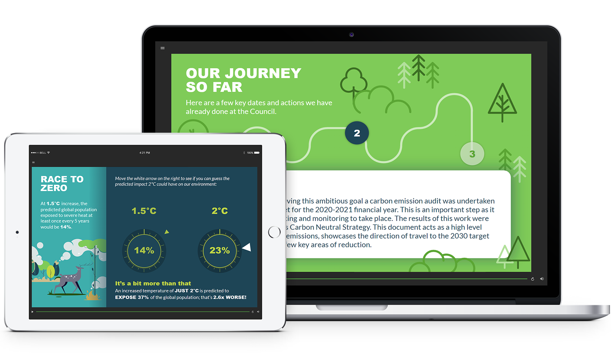
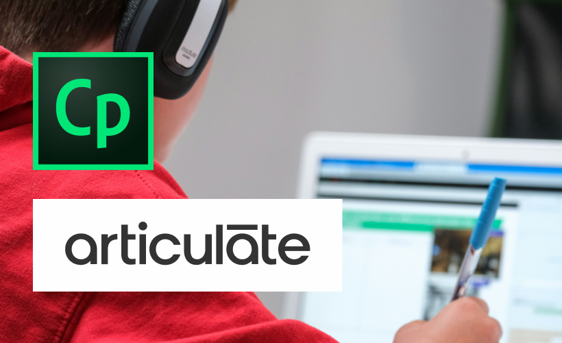
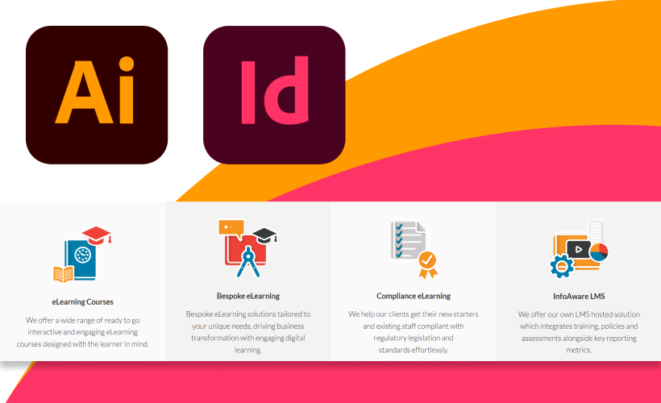

This is a ready-to-print page
InfoAware
E-learning design and visual refresh
InfoAware is a learning and development company focused on delivering digital training, compliance solutions, and consultancy services that help organisations improve performance and engagement. Operating under Sphere International Limited, the company combines off-the-shelf and bespoke learning products with a centralised Learning Management System (LMS), giving clients a practical way to manage training, compliance, and progress in one place.
During my time working with InfoAware, I contributed to both the learning experience and the visual quality of the brand’s digital presence. The work spanned E-learning course creation, illustration, iconography, and visual refinement across the website and educational materials.

Source image: InfoAware
The challenge
The challenge was to create digital learning experiences that were not only informative, but genuinely engaging and easy to use. E-learning content often risks feeling heavy, static, or difficult to absorb, so the work needed to balance educational clarity with visual interest, accessibility, and intuitive interaction.
At the same time, the wider digital experience needed a more cohesive and modern visual language. This meant refreshing the website’s appearance, creating bespoke iconography and illustrations, and ensuring the brand felt clear, friendly, and consistent across both marketing and learning environments.
Source image: InfoAware
Source image: Samsung UK on Unsplash
My role
I worked as an E-learning designer and graphic designer, creating engaging digital training experiences while also contributing to the visual refinement of the website and brand assets. My role sat between instructional design and visual communication, requiring both clarity of thinking and strong creative execution.
Using Adobe Captivate and Articulate Storyline, I designed and built E-learning courses that helped users move through content in a clear, structured, and intuitive way. Alongside this, I developed bespoke illustrations and iconography using Adobe Illustrator and InDesign, helping modernise the platform and strengthen the overall visual identity.


Source images: Adobe Captivate logo. Know more about Adobe Captivate. Articulate Storyline logo. Know more about Articulate Storyline. Compare Fibre on Unsplash
Process and approach
My approach focused on making learning content feel clear, supportive, and visually engaging. For the E-learning courses, this meant organising information into digestible sections, designing intuitive interactions, and creating experiences that supported understanding rather than overwhelming the user.
I used Adobe Captivate and Articulate Storyline to develop interactive course journeys that balanced structure with accessibility, ensuring that learners could move through content with confidence. Each module needed to communicate information effectively while maintaining a sense of engagement, rhythm, and ease of use.
In parallel, I refreshed elements of the digital brand through custom illustration and iconography. This helped create a more cohesive and recognisable visual system, strengthening the connection between the educational content and the wider platform experience.
Iconography, utilising Adobe InDesign and Adobe Illustrator.
Source images: InfoAware, Wikipedia
My contribution
My contribution focused on improving both the effectiveness of the learning experience and the overall visual quality of the digital platform. I created E-learning content that made information easier to absorb and navigate, while also strengthening the brand’s visual communication through illustration and iconography.
By combining instructional thinking with graphic design, I helped create a more cohesive and user-friendly experience across learning and web touchpoints. The result was content that felt more engaging, more accessible, and more aligned with InfoAware’s goal of delivering practical, impactful digital learning solutions.
My work supported InfoAware’s wider mission by making educational resources feel not only functional, but approachable, polished, and visually engaging — because nobody wants training that feels like a punishment disguised as a PDF.